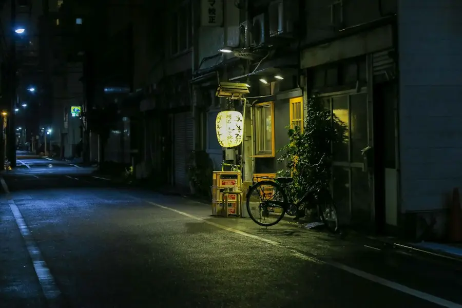
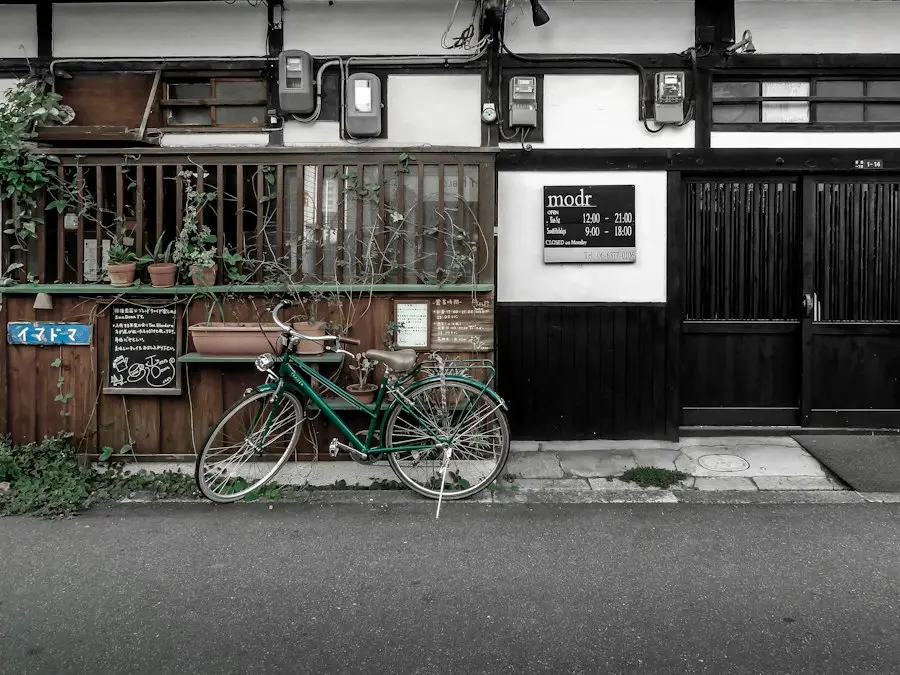

応募する
お電話でも受け付けています0138-30-3030


このホテルの
24時間は、
4人のバトンで
できている。
あなたは、どの時間に？
まだ暗い朝の厨房から、静かな夜の見回りまで。LC五稜郭ホテルで働く4人の、ある1日をのぞいてみてください。
子どもが起きる前に、
ひと仕事。

前はスーパーの惣菜コーナーにいました。5時に厨房に入って、宿泊のお客さまの朝ごはんのお弁当を詰めていきます。
11時に終わるので、午後はまるごと家のこと。子どもの行事の日は、前もって言えばシフトを替えてもらえます。
302号室
6:00にタクシー
手配ずみ ✓

夜勤の人が書いてくれた引き継ぎを読んで、サウナの予約とメールを確かめる。10時からはチェックアウトが続きます。
お見送りのときに「また来るね」って言われると、パン屋で働いていたときと同じくらいうれしいんです。

函館で育ったことが、
いちばん役に立ってる。

ぼくのおすすめ
・塩ラーメン → 〇〇
・朝市は朝7時まで！
ホテルで働くのははじめてでした。15時からはチェックインの時間。観光のお客さまに、夕飯の店や見どころをよく聞かれます。
研修で教わったことより、自分の好きな店を話しているときのほうが、お客さまの顔がゆるむ気がします。いつか正社員になりたいです。
昼は別の仕事。
週2日の夜は、ここ。


20時に出勤して、サウナとラウンジを見回る。24時に閉めて清掃。夜中の3時にはサウナ室の電源を入れて、朝のお客さまに備えます。
朝の人へのノートに「サウナ、温まってます」と書いて帰る。顔を合わせる時間は短いけど、つながっている感じがします。
前の仕事は、喫茶店、パン屋、居酒屋、スーパー、保育士。ホテルの経験がない人がほとんどです。顔を合わせる時間が短いぶん、引き継ぎのノートでつながっています。
5:00 お弁当 42食 完了！さとみ
8:10 302号室 タクシー出発しましたゆい
15:30 団体さま到着。地図を補充けんた
3:00 サウナ温まってます。おやすみなさいたくみ
アルバイト・パート／週2日から／扶養の範囲内OK／Wワーク・副業OK／交通費全額支給／車通勤OK（駐車場あり）／制服あり／スタッフはサウナ無料／正社員登用あり／試用期間6か月（条件は同じ）／屋内禁煙（喫煙所あり）
勤務地：LC五稜郭ホテル（函館市本町29-26、市電「五稜郭公園前」徒歩3分）／株式会社リンクル
お電話でも受け付けています0138-30-3030